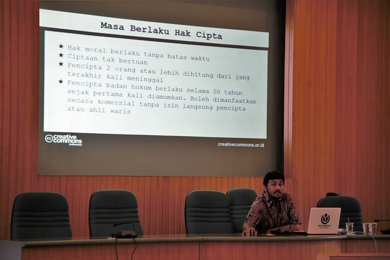

Sosialisasi Penerapan Lisensi Terbuka Pada Jurnal Untuk Editor dan Manajer Jurnal BPP UGM

Pada tanggal 17 Oktober 2017, Creative Commons Indonesia (CCID) berkesempatan untuk menjadi pemateri pada sosialisasi lisensi terbuka pada jurnal penelitian untuk editor dan manajer jurnal di Badan Penerbitan dan Publikasi (BPP) Universitas Gadjah Mada (UGM) di Yogyakarta. Acara ini dimulai tepat pada pukul 10:00 WIB dan dibuka oleh Kepadala Bidang Penerbitan dan Publikasi yaitu bapak Widodo., M.Sc., P.hD. Pada kesempatan kali ini CCID diwakili oleh Hilman Fathoni (Konsultan Lisensi CCID) untuk menyampaikan materi terkait lisensi Creative Commons.
Pemateri seperti biasa mengawali materi dari penjelasan terkait Hak Kekayaan Intelektual dan kaitannya dengan Hak Cipta untuk kemudian menyampaikan bahwa Lisensi CC hanya direkomendasikan untuk diterapkan pada obyek-obyek perlindungan hak cipta. Kemudian materi disambung dengan penjelasan tentang subyek hukum yang ada dalam rezim hukum hak cipta, ruang lingkup perlindungan Hak Cipta, fungsi sosial hak cipta yang terdiri atas pembatasan hak cipta dan ketentuan masa berlaku hak cipta, dan diakhiri dengan penjelasan tentang lisensi hak cipta.
Materi tentang lisensi CC dibuka dengan pengenalan CC sebagai organisasi yang kemudian disambung dengan penjelasan 4 spektrum pilihan dan 6 pilihan lisensi CC. Selanjutnya adalah penjelasan tambahan tentang ketentuan bahwa lisensi CC yang sudah diterapkan tidak dapat dicabut, ketentuan pelisensian sekaligus, ketentuan anti sarana teknologi, dan menyatakan bahwa lisensi CC dapat digunakan sebagai alat bukti di pengadilan. Pada penjelasan selanjutnya pemateri menjelaskan implementasi teknis lisensi CC pada karya, yang kemudian disambung dengan implementasi Tanda Domain Publik dan pernyataan bahwa CC0 (Dedikasi Domain Publik) tidak memiliki payung hukum di Indonesia. Dan bagian ini ditutup dengan pelaporan jumlah ciptaan berlisensi CC dari seluruh dunia.
Selanjutnya pemateri menjelaskan percontohan kegiatan yang menerapkan lisensi CC berdasarkan pembagian bidangnya yang relevan dengan tema sosialisasi saat itu yakni Open Data, Open Education, Open Access to Research, dan Open Government. Pemateri juga menambahkan contoh-contoh lain penerapan lisensi CC pada situs-situs web populer.
Pada kesempatan ini, pemateri juga memberikan rekomendasi spesifik kepada BPP UGM dalam menerapkan lisensi CC pada aktifitias penerbitan jurnal, yakni:
- Memilih lisensi sesuai kebutuhan dan melibatkan pihak kontributor dalam pemilihan ketentuan;
- Membuat sistem dan/atau kebijakan terkait keterbukaan akses pada jurnal terbitan;
- Memfasilitasi pengumuman jurnal dengan teknologi yang sesuai dengan aktivitas berbagi konten terbuka.
Sebagai penutup pemateri juga memberikan penjelasan sedikit terkait cara menggunakan mesin-mesin pencari dengan penjaring konten berlisensi CC. Tidak lupa juga pemateri memberikan pranala-pranala serta untuk mengakses laman FAQ di situs web CCID. Yang kemudian juga ditambahkan dengan sedikit penjelasan tentang Creative Commons Global Network dan forum pembicaraan Slack yang kini terus digunakan oleh seluruh kontributor CC dari seluruh dunia.
Pada sesi diskusi pemateri menjawab pertanyaan tentang bagaimana editor dapat memastikan bahwa konten dalam artikel ilmiah yang diberikan oleh penulis tidak mengandung konten yang merupakan hasil dari pelanggaran hak cipta. Selanjutnya pemateri juga memberikan tips-tips agar dalam aktivitas pengumuman konten, sarana kontrol teknologi tidak diterapkan pada konten berlisensi CC. Pemateri juga menjawab dan memberikan tips bagaimana menempelkan lisensi CC pada satu edisi jurnal yang artikel ilmiahnya menerapkan lisensi CC dengan ketentuan yang berbeda-beda. Dan sebagai penutup, pemateri menegaskan ketidakberlakuan ketentuan dedikasi domain publik dalam konteks hukum Indonesia kepada salah satu penanya.
Materi presentasi pada sosialisasi ini dapat Anda unduh dan akses di tautan berikut (CC BY).
Tags:
Oleh: Creative Commons Indonesia
17 Oct 2017Kategori:
Berita Terbaru
- Lokakarya Hak Cipta dan Lisensi Creative Commons di Pekanbaru
- Pengumuman Resmi: Hasil Akhir Training of Trainers Creative Commons Indonesia
- Literatur tentang Model Bisnis Terbuka "Made With CC"
- Data dan Artikel Ilmiah Terbuka dari PLOS!
- Konten Format Model 3 Dimensi Berilsensi CC di Platform Sketchfab